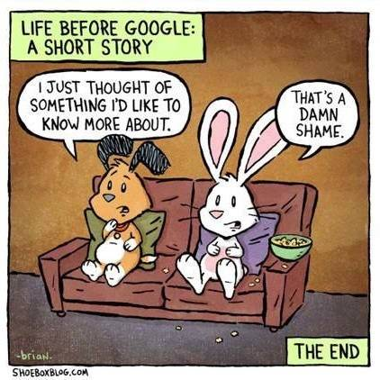

THE STRUGGLE USED TO BE REAL...
-
When your sister picked up the phone in the middle of a big download and you had to start over.
And her exasperated growl when she hears that modem noise.
-
When you couldn't use the Internet (nee AOL or Prodigy) because your dad was expecting an important call.
This is why the second line was invented.
-
When your wife went to the store and you forgot to tell her you need flour.
I guess we're making a second trip.
-
When you had to try to figure out what section "Back to the Future" is in.
Aside: the local video store in my tiny home town in Indiana had an awesome computer-based checkout system where you just search for the movie you want by title, press a button to rent it, and pick it up at the register. This was in the 1980s. When I moved away o was shocked to find that the supposedly fancy "Blockbuster" was so crappy.
-

[this comic perfectly illustrates my next point.]
-
When you had to call a phone number and wait on hold to order something.
And there was always a picture of a cute woman wearing a headset by the phone number in the catalog.
-
When you had to rewind.
-
When you wanted to call a girl but you most likely would have to talk to one of her parents first.
-
When a girl called you and your whole family knew it.
"Oooh! Who was thaaaaaat? 🎶🎶"
-
When you had to be in the living room at exactly the right time if you wanted to watch a show.
And you all had to watch the same thing.
-
When you had to look up directions on a map and write out at-a-glance instructions.
-
When you always had stamps.
And you had to lick them.
-
When the encyclopedia was printed five years ago.
-
When there was nobody to talk to who was interested in the stuff you were interested in.
-
When you had to swap albums.
And put the old one away.
-
When you had to change sides.
-
When you decided maybe it was time to reorganize your CDs again.
-
When the CD was in the car.
And your wife had the car.
-
When the VCR ate the tape.
-
When you had to adjust the tracking.
-
When you had to adjust the station.
-
When you had to adjust the antennas.
And it always got clear when you stood up and then fuzzy again when you sat down.
-
Whatever that UHF dial did.
-
When you memorized phone numbers.
-
When you had to wait for a big hit movie to come back to the theaters.
Or be on tv.
-
When you had to be lucky to catch a movie preview.
-
When the facebook was an actual book.
-
When long distance cost extra.
And you were only allowed to call him on special occasions.
-
When video calling was media shorthand for "fictional future society."
-
When you used a travel agent.
-
When you wanted to grab pizza with your friends after the game but you couldn't get ahold of your mom to change the pickup plans.
So you stayed behind alone instead.
-
When privacy dictated that you take the phone into the closet.
Because of course the cord didn't reach your bedroom.
-
When the news got ink on your fingers.
-
When you were home sick and the only things available to watch were game shows and soap operas.
-
When you had to set the clock.
-
When a new phone meant losing all your speed dials.
-
When you had to reboot to switch from the word processor disk to the game disk.
-
When it took three hours to download a 2 inch grainy black and white 12 frame per second version of the Rodney King video.
-
When you could watch the picture on a web page slowly resolve into its full resolution.
"Progressive" GIFs kids. Look it up.
-
When you didn't have email at home but you had it at work.
-
When you had to put the machine name in someone's email address.
My first public internet email address: gwcoffey@pleiades.cs.purdue.edu.
-
When you dropped off your film.
And didn't know how the shots came out until a few days later.
-
When you had to plug your laptop into the network.
-
When computer screens were 40 pounds and 20 inches deep.
And looked like a fishbowl. And dot pitch was a thing. Trinitron for the win.
-
When TVs were even bigger.
-
When your CD skipped.
Or got scratched.
-
When the tss-pop-tss-pop meant it was time for a new record.
-
When you used a tape adapter to play CDs in the car.
Or one of those radio adapters where you had to find a clean station.
-
When your mobile phone had an antenna you could pull out.
-
When AOL said there were no lines available.
-
Finding a local dail in number for your internet when you were traveling.
-
When you bought a calendar every year.
And you accidentally bought a 1994 in November.
-
When it was time to replace your address book.
-
When price comparisons meant driving around.
-
When you called everybody one by one to figure out your weekend plans.
-
When you kept the phone book.
-
When you paid cash on delivery.
-
When a pocket video game was its own device.
And so was a voice recorder. And a camera. And a Walkman.
-
When your music accidentally melted in the trunk.
-
When you had a pager.
-
When you left a voicemail and you knew what you were saying was being broadcast aloud on the other side.
This is what they're doing in old movies when they say "Pick up! Pick up!"
-
When expense reports meant writing everything down, stapling receipts, and mailing it all in.
-
When you had to look up movie show times in the newspaper.
Or call the theater and listen to the long list. (Hat tip to @BWN_7)
-
When there was no @list.